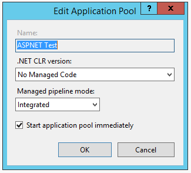

Publishing to IIS¶
By Rick Anderson and Luke Latham
Install the HTTP Platform Handler¶
Install the HTTP Platform Handler version 1.2 or higher:
If you need to enable IIS, see IIS server configuration.
Publish from Visual Studio¶
- Create an ASP.NET 5 app. In this sample, I’ll create an MVC 6 app using the Web Site template under ASP.NET 5 Preview Templates.
- In Solution Explorer, right-click the project and select Publish.
- In the Publish Web dialog, on the Profile tab, select File System.
- Enter a profile name. Click Next.
- On the Connection tab, you can change the publishing target path from the default ..\..\artifacts\bin\WebApp9\Release\Publish folder. Click Next.
- On the Settings tab, you can select the configuration, target DNX version, and publish options. Click Next.
The Preview tab shows you the publish path (by default, the same directory as the ”.sln” solution file).
Deploy to IIS server¶
- Navigate to the publish folder (..\..\artifacts\bin\WebApp9\Release\Publish folder in this sample).
- Copy the approot and wwwroot directories to the target IIS server. Note: MSDeploy is the recommended mechanism for deployment, but you can use Xcopy, Robocopy or another approach.
- In IIS Manager, create a new web site and set the physical path to wwwroot. You can click on Browse *.80(http) to see your deployed app in the browser. Note: The HTTP Platform Handler currently requires this work-around to support apps. If you get an HTTP error, see IIS server configuration.
IIS server configuration¶
- Enable the Web Server (IIS) server role. In client operating systems (Windows 7 through Windows 10) select Control Panel > Programs > Programs and Features > Turn Windows features on or off, and then select Internet Information Services.
- On the Role Services step, remove any items you don’t need. The defaults are shown below.
Unlock the configuration section.
- Launch IIS Manager and select the server in the Connections pane on the left (see image below).
- Double-click Connection Editor.
- In the Section drop-down, select system.webServer/handlers, and then click Unlock Section.
- Set the application pool to No Managed Code. ASP.NET 5 runs in a separate process and manages the runtime.

Supported operating systems¶
The following operations systems are supported:
- Windows 7 and newer
- Windows 2008 R2 and newer
Common errors¶
The following is not a complete list of errors. Should you encounter an error not listed here, please leave a detailed error message in the DISQUS section below along with the reason for the error and how you fixed it.
HTTP 500.19 : ** This configuration section cannot be used at this path.**
- You haven’t enabled the proper roles. See IIS server configuration.
HTTP 500.19 : The requested page cannot be accessed because the related configuration data for the page is invalid.
- You haven’t installed the correct HTTP Platform Handler. See Install the HTTP Platform Handler
- The wwwroot folder doesn’t have the correct permissions. See IIS server configuration.
The IIS 7.0 CoreWebEngine and W3SVC features must be installed to use the Microsoft HTTP Platform Handler 1.x.
- Enable IIS; see IIS server configuration.
HTTP 502.3 Bad Gateway
- You haven’t installed the correct HTTP Platform Handler. See Install the HTTP Platform Handler
HTTP 500.21 Internal Server Error.
- No module installed. See IIS server configuration.